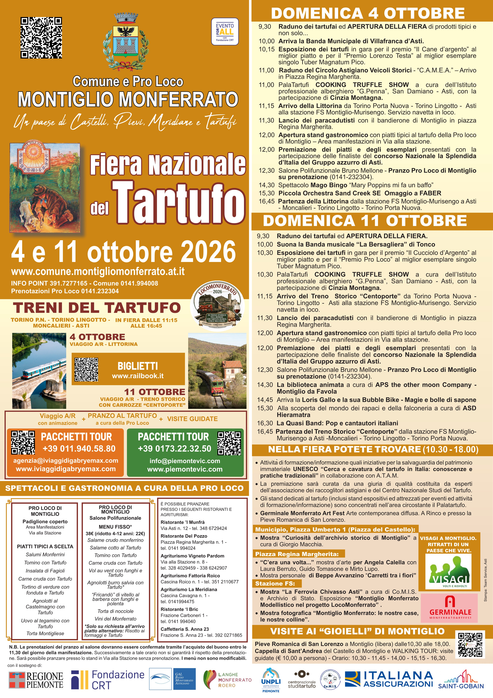

Raduno dei tartufai e apertura della Fiera
Apertura del mercato del tartufo, dei prodotti tipici e degli stand.

Due domeniche per scoprire tartufi, sapori e tradizioni del Monferrato.
Apertura del mercato del tartufo, dei prodotti tipici e degli stand.
Premio “Il Cane d’argento” al miglior piatto e “Premio Pro Loco” al miglior esemplare singolo di Tuber Magnatum Pico.
Raduno C.A.M.E.A. in Piazza Regina Margherita e show a cura dell’Istituto G. Penna con Cinzia Montagna.
Da Torino Porta Nuova, Torino Lingotto e Asti alla stazione Montiglio-Murisengo. Servizio navetta in loco.
Con il bandierone di Montiglio in Piazza Regina Margherita.
Apertura dello stand gastronomico in Via alla Stazione e premiazione dei piatti e degli esemplari in gara.
Salone Polifunzionale Bruno Mellone, su prenotazione al numero 0141 232304.
Spettacolo “Mary Poppins mi fa un baffo?”.
Dalla stazione Montiglio-Murisengo verso Asti e Torino.
Apertura del mercato del tartufo, dei prodotti tipici e degli stand.
Premio “Il Cucciolo d’Argento”, Premio Pro Loco e show dell’Istituto G. Penna con Cinzia Montagna.
Da Torino Porta Nuova, Torino Lingotto e Asti alla stazione Montiglio-Murisengo. Servizio navetta in loco.
Con il bandierone di Montiglio in Piazza Regina Margherita.
Apertura dello stand gastronomico in Via alla Stazione e premiazione dei piatti e degli esemplari in gara.
Salone Polifunzionale Bruno Mellone, su prenotazione al numero 0141 232304.
A cura di APS The Other Moon Company – Montiglio da Favola.
Loris Gallo porta in Fiera magie e bolle di sapone.
Alla scoperta del mondo dei rapaci con ASD Hieramatra.
Dalla stazione Montiglio-Murisengo verso Asti e Torino.
In entrambe le giornate · 10:30–18:00
Pieve romanica di San Lorenzo con ingresso libero. Visite guidate alla Cappella di Sant’Andrea e walking tour alle 10:30, 11:45, 14:00, 15:15 e 17:00 (€ 10).
Pranzo Pro Loco su prenotazione e piatti tipici al tartufo nel padiglione coperto in Via alla Stazione.
Prenotazioni: 0141 232304
Archivio storico, arte contemporanea, ferrovia Chivasso–Asti, fotografie del territorio e Germinale Monferrato Art Fest.